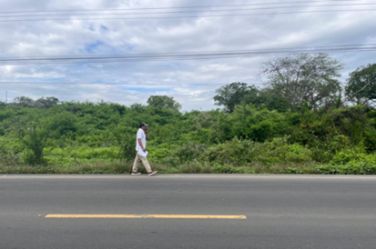
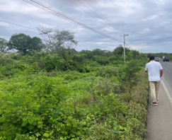
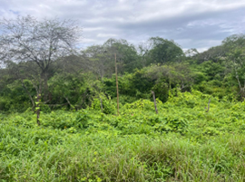
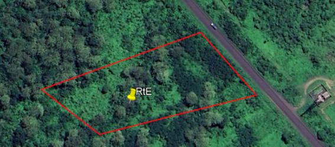
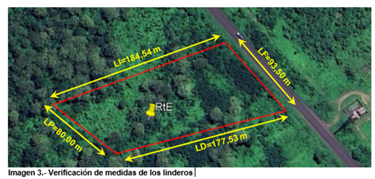
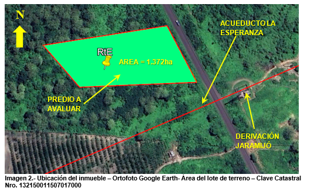

← volver al mapa
Terreno - EC-RJ-155326
EC-RJ-155326 · terreno · JARAMIJO, Manabi
★ Oferta destacada






Datos del remate
| Avalúo pericial | $53,042 |
| Tipo de bien | terreno |
| Área de terreno | 13,715.87 m² |
| Cantón / Provincia | JARAMIJO, Manabi |
| Dirección / Sector | Pepa de uso. canton jaramijó, sitio pepa de uso |
| Señalamiento | Otro Señalamiento |
| Fecha de remate | 2026-08-21 |
| No. de proceso | 13337202100827 |
Análisis vs. mercado
| Avalúo por m² | $4/m² |
| Mediana de mercado en la zona | $110/m² |
| Descuento vs. mercado | 96.5% |
| Comparables usados | 61 |
| Radio de búsqueda | 2000 m |
| Puntaje | 92/100 |
Descripción completa del avalúo
• se trata de un lote de terreno ubicado en la zona rural del cantón de jaramijó.• el lote de terreno es un terreno medianero ubicado al borde de la vía intercantonal, manta – rocafuerte, vía con carpeta asfáltica en buen estado, con 2 carriles con un ancho de 9 metros de ancho• el predio no posee cerramiento lateral derecho ni frontal, se evidencia cerramiento lateral izquierdo y posterior.• no se evidencia ningún tipo de construcción en el predio, y su vegetación es endémica.• la topografía del terreno es irregular, se evidencia unas pequeñas quebradas creadas por el drenaje superficial, con pendientes máximas de 7%.• el terreno no presenta deslizamientos de tierra ni fallas geológicas visibles.• no se evidencia un acceso o sendero al predio, únicamente la via manta – rocafuerte.• es un predio que se encuentra cerca de la derivación de jaramijó, y al eje del acueducto la esperanza.• no tiene servicios básicos, solo se evidencia sistema de alumbrado público y como única vía de acceso con pavimento flexible, manta – rocafuerte, en la que se evidencia la existencia de transporte público.• las condiciones de suelo son buenas y tienen la ventaja de encontrarse cerca del acueducto la esperanza, la derivación de agua y planta de tratamiento de agua potable de jaramijó y la toma de agua de jaramijó, lo cual garantiza el agua para riego, convirtiéndose en un plus para el fomento de la agricultura en el sector.• es importante indicar que la zona donde se ubica el predio, se ha convertido en una zona de desarrollo agrícola, existen grandes extensiones de tierra con cultivos de exportación, gracias al acueducto la esperanza que provee de agua para riego durante todo el año
terreno ubicado sobre la via manta - rocafuerte, terreno baldio sin cerramiento,
canton jaramijó, sitio pepa de uso
Límites: linderos por el frente vía manta - rocafuerte 93,50 m; por atrás sr simón bolívar anchundia carrillo; 80,00 m por costado derecho sr. juan eduardo azúa 177,53 m; por costado izquierdo sr. simón bolívar anchundia carrillo 184.54 m 1.372 ha)
Clave catastral: 132150011507017000
Periodo de posturas: 21/08/2026 00:00:00 a 21/08/2026 23:59:59
Dependencia jurisdiccional: UNIDAD JUDICIAL CIVIL CON SEDE EN EL CANTÓN MANTA
Análisis de inversión
✕ Mala oportunidadSin acceso definido ni servicios básicos, cerca de un acueducto; solo alumbrado público.
A favor:
- Frente a vía asfaltada intercantonal
En contra:
- Sin acceso definido
- Sin servicios básicos
Análisis elaborado a partir de la descripción del avalúo — no es asesoría legal ni financiera.
Esta ficha es una copia de lo publicado en el sitio oficial de remates
judiciales de la Función Judicial del Ecuador, para consulta — no
reemplaza el expediente judicial. remates.funcionjudicial.gob.ec no da
un link propio por remate, por eso se generó esta página aparte.
Antes de ofertar, el expediente debe revisarlo un abogado.